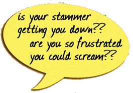

Meetings
We meet at the Halliwell Jones Stadium (Warrington Wolves Rugby Ground) opposite Tesco, Winwick Road, Warrington WA2 7NE from 7.00pm for members wishing to practise the Star Fish Technique, the main meeting starts from 7.30 pm to 9.00pm. Each person pays a member or guest fee of £3 on each visit.| January 2016 |
Post Christmas Meal TBA. |
| December 2015 |
No Meeting due to Christmas Holidays |
| Wed 25th November 2015 |
Speaking circle, topic and presentation/public speaking review |
| Wed 28th October 2015 |
Group discussions, speaking circle, topic session |
| Wed 30th September 2015 |
Speaking circle then outdoor group excercise |
| Wed 26th August 2015 |
Summer meal night out at the Ozmi IndianRestauran |
| Wed 29th July 2015 |
Group discussions, speaking circle |
| Wed 24th June 2015 |
Group discussions, speaking circle - Cancelled due to summer holidays etc |
| Wed 27th May 2015 |
Interview skills/public speaking |
| Wed 29th April 2015 |
Group exercises, handshake introduction, and Speaking session |
| Wed 25th March 2015 |
Speaking circle, topic and presentation/public speaking review |
| Sat 28th February 2015 |
Workshop by Dr David Jones, from 11.00am - 4.00pm Public Speaking/Interview Skills open to People who stammer and non stammerers welcome cost £6 including food at Alfords Sports & Social Club, Manchester Road, Warrington WA1 3NJ. |
| January 2015 |
No Meeting due to post Christmas Party TBA |
| December 2014 |
No Meeting due to Christmas Holidays |
| Wed 26th November 2014 |
Group exercises, speaking circle, presentations. |
| Wed 29th October 2014 |
Group exercises, speaking circle, topic & handshake introductions. |
| Wed 24th September 2014 |
Speaking circle, group exercise, discussion around the BSA Conference. |
| August 2014 |
No Meeting due to members attending the BSA Conference in Glasgow. |
| Wed 30th July 2014 |
** Cancelled due to summer holidays and members on a Star Fish Training Course ** |
| Wed 25th June 2014 |
Group exercises, speaking circle, presentiations or topic session |
| Wed 28th May 2014 |
Group exercises, speaking circle and discussion. |
| Wed 30th April 2014 |
Group exercises, speaking circle |
| Wed 26th March 2014 |
Group exercises, speaking circle and discussion. |
| Wed 26th February 2014 |
Group exercises, speaking circle and discussion |
| Wed 29th January 2014 |
Post Christmas Meal at Mr Lau's |
| December 2013 |
No meeting |
| Wed 27th November 2013 |
Therapy through music with Steve from Rhythmweave. |
| Wed 23rd October 2013 |
Interactive workshop from members of the North Cheshire Speakers club. |
| Sat 19th October 2013 |
LUTAS (Please Let Us Talk About Stammering) Event, at the MacMillan Centre, Trafford General Hospital from 10.00am-5.00pm |
| Wed 25th September 2013 |
Group Exercises, Discussion re the Support Group Article for the BSA & PLUTAS event |
| Wed 28th August 2013 |
Guest Speaker Karen Allen re: PLUTAS Event (Please Let Us Talk About Stammering) Event, in celebration of International Suttering Awareness Day 22nd October 2013. |
| Wed 24th July 2013 |
Guest Speaker - Cherry Hughes, BSA Education Officer |
Click here for more details.